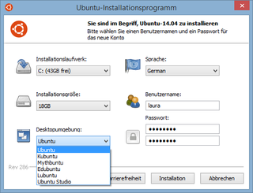
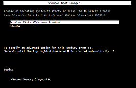

Wubi
Achtung!
Sofern das Windows mit einem EFI Bootmanagement betrieben wird, sollte man auch das Ubuntu bzw. deren Derivate direkt im EFI-Modus installieren. Auch dabei ist wie bei einer Installation im "Wubi-Modus" sichergestellt, die Hardware schnell und unkompliziert wieder in den Ausgangszustand bringen zu können.
Auf jeden Fall sollte man mit einem Live-System vorher die Eignung der Hardware klären.
Hinweis:
Unter Ubuntu 14.04 LTS wird eine überarbeitete Version von Wubi bereitgestellt. Die Windowsdatei wubi.exe ist auf der Desktop-CD bzw. in der ISO-Datei vorhanden. Diese ist für eine Installation auf einem Windows 7 / 8(.1) im BIOS-Modus geeignet.
Dieser Artikel wurde für die folgenden Ubuntu-Versionen getestet:
Ubuntu 14.04 Trusty Tahr
 Wubi
Wubi  ist ein offizielles Ubuntu-Installationsprogramm für Microsoft Windows. Man kann mit dieser Anwendung Ubuntu so unter Windows installieren, wie man es von anderen Programmen gewohnt ist. Installiert wird über die Windows-Anwendung wubi.exe, und die Deinstallation verläuft wie gewohnt über die Systemsteuerung. Hervorzuheben ist, dass Wubi keine eigene Partition anlegt. Stattdessen wird auf einem auswählbaren Windows-Laufwerk ein versionsbezogenes Verzeichnis-System (z.B. ubuntu) erstellt.
ist ein offizielles Ubuntu-Installationsprogramm für Microsoft Windows. Man kann mit dieser Anwendung Ubuntu so unter Windows installieren, wie man es von anderen Programmen gewohnt ist. Installiert wird über die Windows-Anwendung wubi.exe, und die Deinstallation verläuft wie gewohnt über die Systemsteuerung. Hervorzuheben ist, dass Wubi keine eigene Partition anlegt. Stattdessen wird auf einem auswählbaren Windows-Laufwerk ein versionsbezogenes Verzeichnis-System (z.B. ubuntu) erstellt.
Der Start des Ubuntu-Systems erfolgt über einen Eintrag im Windows-Bootmanager. Nach dem Start des Windows-Bootmanager und der Auswahl von Ubuntu wird ein, im Befehlsumfang minimierter, GRUB-Bootloader zwischengeschaltet.
Das installierte Ubuntu unterscheidet sich von der normalen Ubuntu-Installation dadurch, dass das System ständig auf die Dateien der Windows-Partition und nicht auf eine eigene Linux-Partition zugreift, folglich könnte das System ein wenig langsamer bei Schreib- und Lesezugriffen sein. Leider wird der Ruhezustand (Suspend To Disk) bei Wubi-Installationen nicht unterstützt. Sofern man diese Funktion nutzten möchte, sollte eine normale Installation gewählt werden.
Diese Beschreibung ist aufgeteilt in:
Wubi als Anwendung
Zudem gibt es separate Artikel zu folgenden Themen:
Wubi konfigurieren
Tips und Tricks um die Installation unsichtbar zu machen
zusätzliche Laufwerke anlegen, Speicherplatz erweitern
Wubi: Probleme und Lösungen
Wubi-Bootloader: Standardinstallation erweitern
GRUB_2-Menüeintrag "letzte" Auswahl abspeichern und laden
Hintergrundbild eigener Wahl anzeigen lassen
Manipulationen an der eigenen Installation erschweren
Wubi-Migration: Migration einer Wubi-Installation auf eine eigene Partition
Anforderungen¶
Windows VISTA, Windows 7 oder Windows 8 - 8.1
ein System auf dem Windows installiert ist und den Windows Bootmanager verwendet
mindestens 10 GB freier Festplattenplatz für die Installation
mindestens 1 GiB Arbeitsspeicher
mindestens 1 GHz CPU
Bei älteren Rechnern, sollte man die Wubi-Installation von Xubuntu probieren.
Hinweis:
Leider wird noch nicht jede Hardware von Ubuntu unterstützt. Eine Liste mit Links zu externen Hardwaredatenbanken findet man im Artikel Hardwaredatenbanken
Wubi installieren¶
Allgemeine Hinweise¶
Es sollten nur Images mit der Bezeichnung "-desktop-" eingesetzt werden, die allgemein mit Desktop-CD bzw. Live-CD bezeichnet werden. Die Verwendung eines DVD-Images oder Alternate-Images ist nicht möglich!
Nicht unterstützt wird die interne Verschlüsselung der virtuellen Datenträger (Wubi-Container).
Herunterladen¶
Die Installations-Datei wubi.exe ist in der Regel auf der Desktop-CD oder -DVD enthalten bzw. sollte vorzugsweise der Version zugeordnet aus den relevanten Ubuntu-Download-Archiven  heruntergeladen werden. Damit ist eine Installation mit bzw. auch ohne vorhandenem Internetzugang möglich.
heruntergeladen werden. Damit ist eine Installation mit bzw. auch ohne vorhandenem Internetzugang möglich.
Falls der Computer, auf dem man Ubuntu mit Wubi installieren will, keinen Internetzugang hat, lädt man zusätzlich das Image (ISO-Datei) der zu installierenden Ubuntuversion an anderer Stelle herunter, dieses muss dazu aber nicht auf eine CD gebrannt werden. Man kann auch bereits heruntergeladene ISO-Images verwenden. Alternativ ist auch der direkte Start über eine (selbstgebrannte) CD möglich.
Ubuntu ohne Derivate¶
Abweichend für das  Ubuntu-Desktop (nicht
Ubuntu-Desktop (nicht  Kubuntu etc.), ist eine geänderte Vorgehensweise vorgegeben. Hierzu lädt man sich aus den relevanten Ubuntu-Download-Archiven ausschließlich die Datei wubi.exe herunter und startet damit die Installation. Dabei wird dann ein schon lauffähiges Images, passend zur Rechnerarchitektur, heruntergeladen, was während der Installation nur noch der jeweiligen Hardware angepasst wird.
Kubuntu etc.), ist eine geänderte Vorgehensweise vorgegeben. Hierzu lädt man sich aus den relevanten Ubuntu-Download-Archiven ausschließlich die Datei wubi.exe herunter und startet damit die Installation. Dabei wird dann ein schon lauffähiges Images, passend zur Rechnerarchitektur, heruntergeladen, was während der Installation nur noch der jeweiligen Hardware angepasst wird.
Nach Beendigung der Installation und einem Neustart ("reboot") ist das Ubuntu sofort einsatzbereit und kann bzw. muss nur noch seinen Anforderungen angepasst werden.
Weiterentwicklungen¶
Zur offiziellen Wubi-Version existieren einige Fehlerbehebungen und Verbesserungen, die allerdings dort nie veröffentlicht wurden. Diese Erweiterungen betreffen speziell Installationen
im UEFI-Modus (Standard bei Windows 8(.1) und 10),
der aktuellen Ubuntuversionen und
zusätzlicher Ubuntu-Derivate wie Ubuntu GNOME oder Ubuntu MATE
Auf Wunsch der Gemeinschaft wurden diese vom Forumsmitglied hakunamatata als Github-Projekt WubiUEFI zur Verfügung gestellt:
Hinweis!
Fremdsoftware kann das System gefährden.
Anmerkung: Weitere Informationen befinden sich im Projekt-Wiki  und auch im Forum.
und auch im Forum.
Installation¶
Allgemeine Vorgehensweise¶
Zur Installation startet man die Anwendung wubi.exe.
Nun wählt man im Installationsfenster (abweichende Bezeichnungen möglich): 
das Laufwerk ("Installationslaufwerk"), auf dem der Ordner installiert werden soll
die gewünschte Größe ("Installationsgröße") des virtuellen Laufwerks (der Festplattenplatz der einem dann unter Ubuntu zur Verfügung steht) und somit auch der Installation im Wubi-Ordner
die gewünschte Desktopumgebung ("Arbeitsumgebung") bzw. Ubuntu-Version, wie z.B. Ubuntu, Kubuntu, Edubuntu, Xubuntu oder Ubuntu Studio
die gewünschte Sprache ("Sprache:"), z.B. Deutsch ("German")
den Benutzernamen zur Anmeldung am Anmeldebildschirm (ggf. korrigieren, es wird der aktuelle Windows-Nutzer genommen)
das gewünschte Anmelde-Passwort für den angegebenen Benutzer
Nun klickt man auf den Button "Installation", um die Installation zu starten. Wubi lädt hierbei das Image des gewünschten Systems herunter, sofern sich nicht das relevante Image schon im selben Ordner wie das Installationsprogramm befindet.
Nach dem Ende des Ladevorgangs wird man aufgefordert, Windows neu zu starten. Mit dem nächsten Start des Rechners wählt man im Windows Bootmanager "Ubuntu" aus und beendet damit die Installation.
Hinweis:
 Verwendet man unter Windows ein 64-Bit-System, so lädt Wubi automatisch das ISO-Image der AMD64-Version (auch für Intel
Verwendet man unter Windows ein 64-Bit-System, so lädt Wubi automatisch das ISO-Image der AMD64-Version (auch für Intel dual/quad core) von Ubuntu herunter und installiert es. Möchte man dies nicht, muss man das gewünschte Image per Hand herunterladen und im Wubi-Ordner platzieren, oder man startet Wubi mit dem Parameter --32bit über den Ausführen-Dialog oder der Eingabeaufforderung (CMD).
32-Bit auf 64-Bit-Rechner¶
Will man auf einem Rechner mit 64-Bit-Architektur eine 32-Bit-Installation aufspielen, so muss man das Windows-Terminal (Eingabeaufforderung mit Adminrechten) aufrufen und dort eingeben:
cd Pfad zum Downloadverzeichnis
wubi.exe --32
ISO-Datei verwenden¶
Will man ein vorhandenes ISO-Image verwenden, so muss man das Windows-Terminal (Eingabeaufforderung mit Adminrechten) aufrufen und dort eingeben:
cd Pfad zum Downloadverzeichnis
wubi.exe --iso Pfad_zur_ISO-Datei
Der Pfad zur ISO-Datei muss auch dann eingegeben werden, wenn diese Datei im selben Verzeichnis wie die Datei wubi.exe liegt.
Erster Start¶

Zum regulären Start von Ubuntu sollte der Rechner neu gestartet werden. Es erscheint dann ein Windows-Bootdialog zum Auswählen des zu startenden Betriebssystems (Windows und Ubuntu). Nach dem Auswählen von Ubuntu wird der Grub-Bootloader aufgerufen, der je nach Voreinstellung dann ein weiteres Auswahlmenü anbietet - hier muss man ggf. die
⇧ -Taste gedrückt halten, siehe auch die Variable GRUB_HIDDEN_TIMEOUT. Die Auswahl von Windows bzw. anderer Betriebssysteme lässt dann jeweils dieses Betriebssystem starten.
Sollten nach der Auswahl von Ubuntu Probleme auftreten, helfen diese Hinweise weiter.
Hinweis:
Es wird bei einer Installation im GRUB 2-Bootloader kein Menüeintrag für das auf dem gleichen Rechner vorhandene "Windows" angelegt, um einen Schleifenaufruf zu vermeiden.
Nach der Installation¶
Ubuntu ist zwar direkt nach der Installation bereits vielseitig verwendbar, aber aus verschiedenen Gründen muss an vielen Stellen oft nachgeholfen werden. Wie man am besten dabei vorgeht, wird in den ersten Schritten erklärt.
Datensicherung durchführen¶
Die System-Datei root.disk sollte man regelmäßig sichern, unter Ubuntu wie bei einer normalen Installation oder unter Windows als direkte Kopie dieser Datei (wegen der Größe nicht zu empfehlen).
Dazu muss man zeitgleich die Dateien
wubildr.mbr, wubildr und wubildr.cfg
von der Windows-Partition (bzw. unter Ubuntu aus dem Verzeichnis /host) immer mit sichern.
Defragmentation¶
Nachdem man die allgemeine Funktion des Ubuntu getestet und auch die erste Datensicherung durchgeführt hat, sollte man die Partition, auf der das Ubuntu angelegt wurde, unter Windows defragmentieren.
In der Regel wurde die Datei root.disk wegen ihrer Größe und der anderen, bereits vorhandenen Daten auf dieser Partition, nicht in einem Stück angelegt - sondern auf mehrere Bereiche verteilt (fragmentiert). Das wird zwar grundsätzlich von dem Dateimanager richtig abgehandelt, kann aber das Lesen bzw. Schreiben auf den Datenträger verlangsamen.
Installationsdaten löschen¶
Die Installationsdaten in den Ubuntu-Verzeichnissen
/host/ubuntu/install => eine versteckte ISO-Datei
/host/ubuntu/winboot => bis auf die Dateien
wubildr.mbr, wubildr und wubildr.cfg
können alle Dateien nach erfolgreichem Test des Systems gelöscht werden. Auch die Datei wubi.exe und und falls vorhanden, das *.iso, werden nicht mehr benötigt.
Zugriff auf Windows-Partitionen¶
Die Windows-Partition, auf der Wubi installiert wurde, ist anschließend unter /host eingehängt. Der Zugriff auf die anderen Windows-Partitionen erfolgt wie gewohnt (siehe Windows-Partitionen einbinden).
Ubuntu aktualisieren¶
Eine Aktualisierung ("update") wird wie bei einer regulären Installation ausgeführt - dies gilt sowohl für die laufende Aktualisierung einzelner Pakete innerhalb einer Version als auch für einen Versionssprung ("upgrade"). Es sind die gleichen Voreinstellungen im Paketmanager zu setzen.
Einschränkungen sind unter Vorgaben zum Update beschrieben.
Wubi Verschieben¶
Um das laufende Wubi zu vergrößern, weil der vormals gewählte Speicherplatz nicht mehr ausreicht, wird das Anlegen weiterer Wubi-Container empfohlen.
Um ein mit Wubi installiertes Ubuntu (oder Derivat) als Betriebssystem auf eine eigene nicht NTFS-Partition zu verschieben, ohne den Umweg über eine
Datenauslagerung
Neuinstallation
Datenimport
zu beschreiten, besteht die Möglichkeit das System in der bestehenden Form und momentanen Konfiguration auf eine freie Partition auslagern.
Dabei kann man wählen, ob man einen
GRUB 2-Bootloader
anlegen oder einen fremden, schon vorhandenen
Bootmanager
einsetzen will.
Dieses wird in in dem separaten Artikel Wubi/Migration beschrieben.
Wubi Deinstallation¶
Um das mit Wubi installierte Ubuntu komplett zu deinstallieren, wählt man in der Windows-Systemsteuerung im Abschnitt "Programme deinstallieren" den Eintrag von "Ubuntu" (bzw. "Kubuntu") zur Deinstallation aus oder lässt es über die Anwendung uninstall-wubi.exe ausführen.
Bei einer älteren Version von Wubi kann es sein, dass die Deinstallation nicht funktioniert, wenn Ubuntu auf einem anderen Laufwerk als C: installiert wurde. Für diesen Fall gibt es eine angepasste Uninstall-Ubuntu.exe.
Sollten dennoch Reste auf dem Windowssystem zurückbleiben, so kann man diese wie folgt bereinigen:
Im Bootmenü erscheint immer noch "Ubuntu" zur Auswahl.
Bei XP: Löschen des Eintrags / der Zeile mit
C:\wubildr.mbr="Ubuntu"der XP boot.ini
Ab Vista: Mit einem entsprechenden BCD-Bearbeitungsprogramm, z.B. EasyBCD den Bootmanager bearbeiten
Es gibt noch Dateien mit dem Namen wubildr* auf den Datenträgern.
Löschen der Dateien mit
 -> "Löschen" im Kontexmenü
-> "Löschen" im Kontexmenü
Es gibt noch Einträge in der Registry.
Manuelles Löschen der Schlüsselwerte über die Funktion "regedit". Dazu im regedit-Editor mit Strg + F die Suchfunktion aufrufen und
wubieingeben.
Achtung!
Man sollte eine Sicherung der Registry anlegen und dazu die relevanten Informationen über die "Hilfen" des Windows-System nutzen.
Das manuelle Bearbeiten, insbesondere das Nachtragen oder Löschen von Schlüsseln, Werten und Daten bedarf bestimmter Grundkenntnisse und kann zu einem nicht mehr reparierbaren System führen. Im Zweifel ist es besser, diese Einträge zu belassen, solange diese nicht zu Fehlfunktionen führen.
Links¶
Wubi/Konfiguration Erweiterte Einstellungen unter Ubuntu und andere Hinweise
Wubi/Problembehebung Hinweise zum Testen und Reparieren von Wubi
Wubi/Erweiterungen - GRUB_2 Funktionalität unter Wubi einbringen
Wubi/Migration Wie man sein Wubi auf eine eigene Partition verschiebt
GRUB_2 Leitartikel Die Übersicht zu den GRUB_2 WIKI-Artikeln, diese sind jedoch nur eingeschränkt als Informationquelle zu benutzen:
GRUB 2/Konfiguration Den Bootloader technisch anpassen
GRUB 2/Shell Bearbeitungs- und Rettungsmodus
GRUB 2/Skripte Eigene Bedürfnisse verwirklichen
EFI Bootmanagement - Alternative zu einer Wubi-Installation
EFI Deinstallieren - und das sichere Entfernen derselben
wubi.exe versionsrelevante Datei runterladen
EasyBCD Tool zum Bearbeiten vom Bootmanager (VISTA/Windows 7)

Weitere Informationen¶
Wubi Guide Das WIKI in englischer Sprache
Wer hat Angst vorm Pinguin? - Artikel über Wubi aus LinuxUser 01/2008
Starten.mit-Linux.de - Deutsche Wubi-Installer-Seite
- Erstellt mit Inyoka
-
 2004 – 2017 ubuntuusers.de • Einige Rechte vorbehalten
2004 – 2017 ubuntuusers.de • Einige Rechte vorbehalten
Lizenz • Kontakt • Datenschutz • Impressum • Serverstatus -
Serverhousing gespendet von